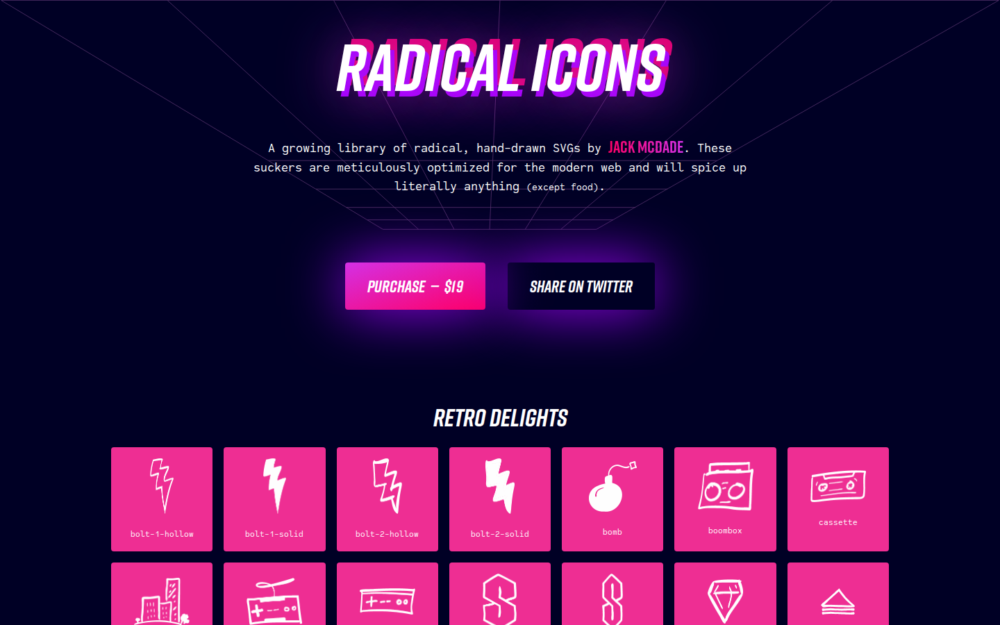

冻结于 final-artifacts.sha256。抽查路径：视觉来源（下表 VS）→ 交易 UX 来源（PU）→ 决策截图（review/v0-revisions）→ token preview。所有 VS/PU 均有原站 URL、双视口截图、SHA256、授权状态（source-register.json）。

其余：VS-003 Edgerunners2 / VS-004 Neon Dystopia / VS-005 3D Desk / VS-006 2bit.chat / VS-008 SVAROG——详见 visual-source-index.html。
| ID | 站点 | 观察要点 | 对应路由 |
|---|---|---|---|
| PU-000 | Outrun 旧版 demo（过时产物非真相源） | 三段式 IA/五 Tab/Swap 审阅行（历史参照） | /memeverse/[verseId] |
| PU-002/d | letsbonk | 过滤标签+卡片网格；迁移横幅+MC 进度 | /memeverse、/[verseId] |
| PU-003 系 | four.meme | 表格型列表；四阶段生命周期指示器；创建表单 | /memeverse、/create、/[verseId] |
| PU-004 | Pendle | 到期日一级维度/APY 列 | /pol |
| PU-005 | Jupiter | 双输入+可展开审阅 | /trade |
| PU-006/d | Jito | TVL/APY 指标卡（防 hero-metric 套版） | /portfolio、/stake |
| PU-007/d | Spark | 多资产 APY 看板+存款上限 | /portfolio 嵌入（USR） |
| PU-008 | SunPump（备用） | 列表+创建入口 | /memeverse |
| PU-009/d | ponsfamily（用户手动截图） | Create/Graduated Tab+计数；Market/Limit/Orders；降级横幅 | /memeverse、/[verseId] |
| 项 | 路径 |
|---|---|
| 四轴决策链 | docs/design/decision-log.md（001 方向 D1+去极客 / 002 P2 / 003 T2 / 004 字标） |
| v0 方向/轴选择证据 | docs/design/review/v0-revisions/outrundapp-vercel-*.png、axis-*.png（revision 链 r2/r3） |
| token 固化 | components/design-system/tokens.css · docs/design/review/token-preview.html |
| 组件契约 | docs/design/review/component-contract-preview.html |
| QA/差异轮 | docs/design/qa-round-00.md · diff-round-01.md |
保留状态：全部 retain（references/retention-log.md）。清理需用户批准。